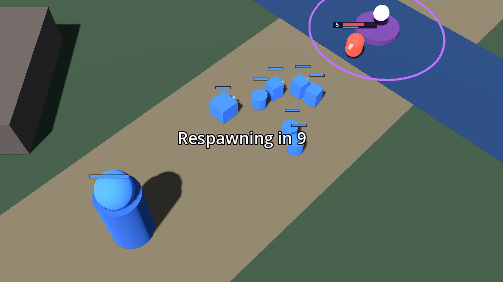

A 5v5 MOBA with no shop
Project Altar (a code name for now) is a team battle game in development by solo indie dev Ynairally. There's no gold and no item building. Heroes grow through levels, attributes and relics won at a contested altar.

Devlog
#2: Six heroes and fog of war
Hero select, five new heroes, and fog of war without wards.
#1: A MOBA with no shop
The idea behind the game, its two hard rules, and the first playable prototype.